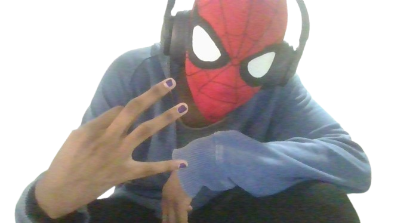
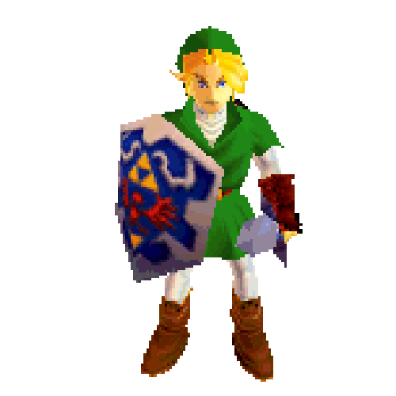

![happy lil yellow dude :]](./assets/yellowdancingguy.gif)

Whatsup! If it's not obvious, the name's AJ! Otherwise, known online as Kirbyy. I'm a highschool senior with a recently sparked love for programming and a huge geek in every sense of the word. I love plenty of things (probably way too many, I rarely have time to indulge in all my hobbies...) and we'll just pretend that's the reason I don't touch grass. I love plenty of things like movies, astronomy, hockey, milsim, superhero media, engineering, art, music, etc!
I've finally taken the dive this year to let myself love astronomy. I also got really into hockey this year. I'm really enjoying the regular season. I love my local team (Go Bolts!) and I'm particularly fond of the Kraken, the Caps, and the Pens. (Yes, I know they're kinda rivals. I can't help it.) I HATE THE KNIGHTS and as a Tampa fan cannot root for the Panthers. Everyone else is cool. I would love to start collecting hockey cards as well!
Maybe eventually I'll start a Letterboxd and list all my favorite movies. Though, I watch so many I doubt it'd be conclusive. I also really love superhero media, and have started to get into comics this year! Eventually, I may set up a way for me to get reccomendations. I've honestly been on a DC deepdive since I watched Superman 2025 in theaters a year ago (Top 5 superhero movie. I'm so excited for Man of Tmr). I also must mention I love spiderman. I have for years, and I'm obsessed (Andrew's version doesn't deserve so much hate and Spiderman 3 is the best out of Tobey's trilogy). Can we tell I'm very passionate?

